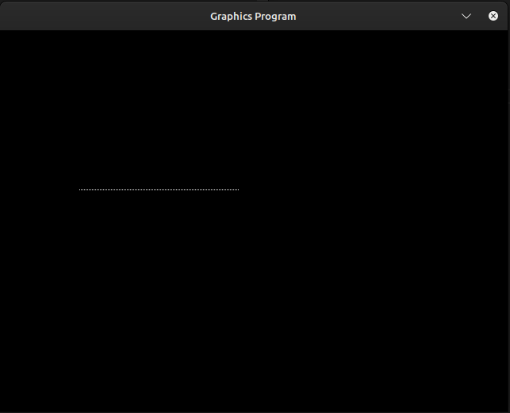
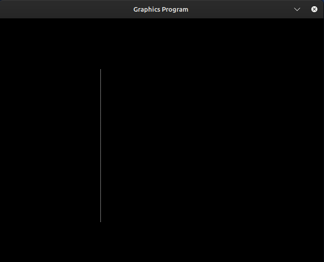

int gd = DETECT, gm;
initgraph(&gd, &gm, "");
This will set up a graphics window for you to draw in.
closegraph();
Now that we understand the basics of graphics in C, we will start by drawing a point on the screen. The following program demonstrates how to draw a pixel.
#include <graphics.h> // Graphics library for drawing
#include <stdio.h> // Standard I/O for getchar()
int main() {
int gd = DETECT, gm; // Detect graphics driver and store graphics mode
initgraph(&gd, &gm, ""); // Initialize graphics system
putpixel(200, 200, WHITE); // Draw a white pixel at (200, 200)
getchar(); // Wait for user input before closing (alternative to getch())
closegraph(); // Close the graphics window
return 0; // Return success
}
Explaination of the code
Now that we understand how to display a single pixel, let’s move to the next step: drawing a horizontal line.
Concept of Drawing a Horizontal Line
Program to Draw a Horizontal Line
#include <graphics.h> // Graphics library for drawing
#include <stdio.h> // For getchar()
int main() {
int gd = DETECT, gm; // Detect graphics driver and mode
initgraph(&gd, &gm, ""); // Initialize graphics mode
int x1 = 100, x2 = 300, y = 200; // Start and end points of the line
for (int x = x1; x <= x2; x++) {
putpixel(x, y, WHITE); // Draw white pixels along the x-axis
}
getchar(); // Wait for user input before closing
closegraph(); // Close graphics mode
return 0;
}
output:
Program to Draw a Vertical Line: Here the x coordinate will remain same while y coordinate will change.
#include <graphics.h> // Graphics library for drawing
#include <stdio.h> // For getchar()
int main() {
int gd = DETECT, gm; // Detect graphics driver and mode
initgraph(&gd, &gm, ""); // Initialize graphics mode
int x = 200, y1 = 100, y2 = 300; // Starting and ending y-coordinates
for (int y = y1; y <= y2; y++) {
putpixel(x, y, WHITE); // Draw white pixels along the y-axis
}
getchar(); // Wait for user input before closing
closegraph(); // Close graphics mode
return 0;
}
Output:

#include <graphics.h> // Graphics library for drawing
#include <stdio.h> // For getchar()
int main() {
int gd = DETECT, gm; // Detect graphics driver and mode
initgraph(&gd, &gm, ""); // Initialize graphics mode
int x1 = 100, y1 = 100; // Top-left corner of the square
int side_length = 200; // Length of the side of the square
// Draw top side (horizontal line)
for (int x = x1; x <= x1 + side_length; x++) {
putpixel(x, y1, WHITE); // Draw white pixels
}
// Draw right side (vertical line)
for (int y = y1; y <= y1 + side_length; y++) {
putpixel(x1 + side_length, y, WHITE); // Draw white pixels
}
// Draw bottom side (horizontal line)
for (int x = x1; x <= x1 + side_length; x++) {
putpixel(x, y1 + side_length, WHITE); // Draw white pixels
}
// Draw left side (vertical line)
for (int y = y1; y <= y1 + side_length; y++) {
putpixel(x1, y, WHITE); // Draw white pixels
}
getchar(); // Wait for user input before closing
closegraph(); // Close graphics mode
return 0;
}
In graphics.h, there is a built-in function to draw rectangles directly, which makes things a lot simpler compared to manually drawing each side using loops.
The rectangle() Function
The rectangle() function is part of the graphics.h library and allows you to easily draw a rectangle by just specifying two opposite corners (top-left and bottom-right).
Syntax of rectangle()
rectangle(int x1, int y1, int x2, int y2);
Where:
How It Works:
#include <graphics.h> // Graphics library for drawing
#include <stdio.h> // For getchar()
int main() {
int gd = DETECT, gm; // Detect graphics driver and mode
initgraph(&gd, &gm, ""); // Initialize graphics mode
int x1 = 100, y1 = 100; // Top-left corner of the square
int side_length = 200; // Length of the side of the square
// Bottom-right corner will be (x1 + side_length, y1 + side_length)
rectangle(x1, y1, x1 + side_length, y1 + side_length); // Draw the square
getchar(); // Wait for user input before closing
closegraph(); // Close graphics mode
return 0;
}
The Digital Differential Analyzer (DDA) Algorithm gets its name from its underlying principles. The term "Digital" refers to the fact that this algorithm operates in a discrete digital space, meaning it works with pixel positions rather than continuous mathematical functions. The term "Differential" comes from the way the algorithm incrementally calculates the next point in the line using small differences (\( dx \) and \( dy \)) rather than solving an equation directly. Finally, "Analyzer" is derived from early analog computing methods, where a Differential Analyzer was a mechanical device used for solving differential equations. The DDA algorithm follows a similar approach but in a digital manner, analyzing and computing the next pixel position step by step. This makes it an efficient and systematic way to draw lines in computer graphics.
Step-by-Step Algorithm:
Step-by-Step Algorithm:
The Digital Differential Analyzer (DDA) algorithm exists in both mathematical theory and computer graphics, but their implementation and purpose differ. The key difference comes from how they handle continuous vs. discrete values.
This version of DDA is based on numerical methods and is often used in mathematical analysis and analog computations. The main idea is to compute small incremental changes to approximate a curve or a function over time.
How It Works:If we need to draw a line from (2,3) to (6,7), the slope is:
\[ m = \frac{(y_2 - y_1)}{(x_2 - x_1)} = \frac{7 - 3}{6 - 2} = 1 \]Then, by incrementing x by small steps (like 0.1), we calculate y-values accordingly.
Problem in Computer Graphics: The output might be (2,3), (2.1,3.1), (2.2,3.2), etc. But pixels can’t be placed at fractional coordinates!
Since computer screens use pixels, the DDA algorithm must ensure that a line is drawn using only integer coordinates.
How It Works:If we need to draw a line from (2,3) to (6,7):
Thus, the pixel points would be:
All integer coordinates, perfect for a screen.
Bresenham's Line Drawing Algorithm is another popular technique for drawing straight lines in computer graphics. It is known for being more efficient than the DDA algorithm because it uses only integer arithmetic, avoiding the floating-point calculations that DDA uses. The algorithm makes decisions on whether to move horizontally or diagonally based on the error (decision parameter), which ensures that the line drawn appears continuous and smooth on pixel grids. Bresenham’s algorithm is especially efficient for raster displays where pixel placement is crucial.
Goal of the algorithm
Step-by-Step Algorithm:
Step-by-Step Algorithm
We want to simulate a traffic light system using graphics. The traffic light will change colors, and we’ll display "STOP", "READY", and "GO" at the appropriate times. It's a simple simulation where each color appears on the screen for a short time.
midx = getmaxx() / 2;
midy = getmaxy() / 2;
setcolor(RED);
settextstyle(SCRIPT_FONT, HORIZ_DIR, 3);
settextjustify(CENTER_TEXT, CENTER_TEXT);
outtextxy(midx, midy-10, "Traffic Light Simulation");
outtextxy(midx, midy+10, "Press any key to start");
getch();
cleardevice();
setcolor(WHITE);
settextstyle(DEFAULT_FONT, HORIZ_DIR, 1);
rectangle(midx-30, midy-80, midx+30, midy+80);
circle(midx, midy-50, 22);
setfillstyle(SOLID_FILL, RED);
floodfill(midx, midy-50, WHITE);
setcolor(BLUE);
outtextxy(midx, midy-50, "STOP");
usleep(2000000);
graphdefaults();
cleardevice();
setcolor(WHITE);
rectangle(midx-30, midy-80, midx+30, midy+80);
circle(midx, midy, 20);
setfillstyle(SOLID_FILL, YELLOW);
floodfill(midx, midy, WHITE);
setcolor(BLUE);
outtextxy(midx-18, midy-3, "READY");
cleardevice();
setcolor(WHITE);
rectangle(midx-30, midy-80, midx+30, midy+80);
circle(midx, midy+50, 22);
setfillstyle(SOLID_FILL, GREEN);
floodfill(midx, midy+50, WHITE);
setcolor(BLUE);
outtextxy(midx-7, midy+48, "GO");
setcolor(RED);
settextstyle(SCRIPT_FONT, HORIZ_DIR, 4);
outtextxy(midx-150, midy+100, "Press any key to exit...");
getch(); // Wait for user input before exiting
closegraph();
Understanding the arc() Function for Drawing a Smiley Face
To draw a smiley face, we need a curved line for the mouth. This curved line is called an arc.
What is an Arc?
The arc(x, y, startAngle, endAngle, radius) Function
This function helps us draw an arc on the screen. Let’s break down its parameters in simple terms:
Example: Drawing a Smiley Mouth
arc(300, 340, 20, 160, 50);
Flip the Smile (Make it a sad face)
arc(300, 340, 200, 340, 50);
Here, 200° to 340° makes the arc curve downwards instead of upwards.
Only the Arc was the tricky part and we have learned about it and we already know about circle so we just have to place bigger circle for the face and smaller circles for the eyes.